Unreviewed extraction sample
First 30 of 1047 proposals. Full queue: review_queue.jsonl. Source crops support review; nothing is adjudicated.
d3905f6d3c31af4cdf5d47d3e6380179c5fd2c8f55e489648d140783b06a0d3b:p0003:l0032:question
PDF page 3
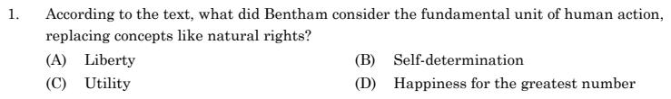
1. According to the text, what did Bentham consider the fundamental unit of human action,
replacing concepts like natural rights?
(A) Liberty (B) Self-determination
(C) Utility (D) Happiness for the greatest number
human_review_required
d3905f6d3c31af4cdf5d47d3e6380179c5fd2c8f55e489648d140783b06a0d3b:p0004:l0000:question
PDF page 4
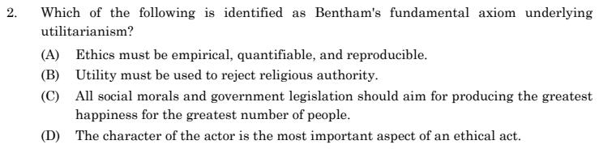
2. Which of the following is identified as Bentham's fundamental axiom underlying
utilitarianism?
(A) Ethics must be empirical, quantifiable, and reproducible.
(B) Utility must be used to reject religious authority.
(C) All social morals and government legislation should aim for producing the greatest
happiness for the greatest number of people.
(D) The character of the actor is the most important aspect of an ethical act.
human_review_required
d3905f6d3c31af4cdf5d47d3e6380179c5fd2c8f55e489648d140783b06a0d3b:p0004:l0007:question
PDF page 4

3. Utilitarianism, as described in the text, emphasizes which aspect of an act over the
others listed?
(A) The character of the actor
(B) The actor's motivation
(C) The particular circumstances surrounding the act
(D) The consequences or ultimate purpose of an act
human_review_required
d3905f6d3c31af4cdf5d47d3e6380179c5fd2c8f55e489648d140783b06a0d3b:p0004:l0013:question
PDF page 4

4. The characteristic of utilitarianism that operates beyond individual thought, desire, and
perspective is called:
(A) Universality (B) Quantifiability
(C) Rationality (D) Objectivity
human_review_required
d3905f6d3c31af4cdf5d47d3e6380179c5fd2c8f55e489648d140783b06a0d3b:p0004:l0017:question
PDF page 4
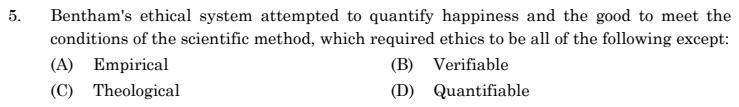
5. Bentham's ethical system attempted to quantify happiness and the good to meet the
conditions of the scientific method, which required ethics to be all of the following except:
(A) Empirical (B) Verifiable
(C) Theological (D) Quantifiable
human_review_required
d3905f6d3c31af4cdf5d47d3e6380179c5fd2c8f55e489648d140783b06a0d3b:p0005:l0009:question
PDF page 5
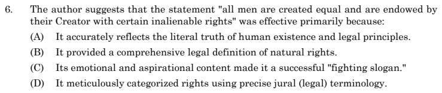
6. The author suggests that the statement "all men are created equal and are endowed by
their Creator with certain inalienable rights" was effective primarily because:
(A) It accurately reflects the literal truth of human existence and legal principles.
(B) It provided a comprehensive legal definition of natural rights.
(C) Its emotional and aspirational content made it a successful "fighting slogan."
(D) It meticulously categorized rights using precise jural (legal) terminology.
human_review_required
d3905f6d3c31af4cdf5d47d3e6380179c5fd2c8f55e489648d140783b06a0d3b:p0005:l0015:question
PDF page 5
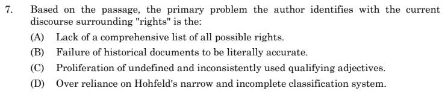
7. Based on the passage, the primary problem the author identifies with the current
discourse surrounding "rights" is the:
(A) Lack of a comprehensive list of all possible rights.
(B) Failure of historical documents to be literally accurate.
(C) Proliferation of undefined and inconsistently used qualifying adjectives.
(D) Over reliance on Hohfeld's narrow and incomplete classification system.
human_review_required
d3905f6d3c31af4cdf5d47d3e6380179c5fd2c8f55e489648d140783b06a0d3b:p0005:l0021:question
PDF page 5
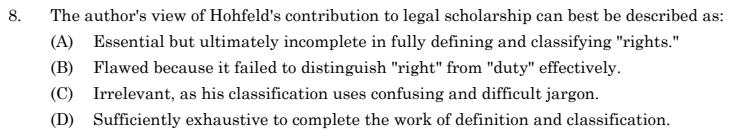
8. The author's view of Hohfeld's contribution to legal scholarship can best be described as:
(A) Essential but ultimately incomplete in fully defining and classifying "rights."
(B) Flawed because it failed to distinguish "right" from "duty" effectively.
(C) Irrelevant, as his classification uses confusing and difficult jargon.
(D) Sufficiently exhaustive to complete the work of definition and classification.
human_review_required
d3905f6d3c31af4cdf5d47d3e6380179c5fd2c8f55e489648d140783b06a0d3b:p0005:l0026:question
PDF page 5
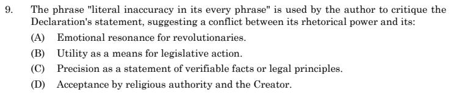
9. The phrase "literal inaccuracy in its every phrase" is used by the author to critique the
Declaration's statement, suggesting a conflict between its rhetorical power and its:
(A) Emotional resonance for revolutionaries.
(B) Utility as a means for legislative action.
(C) Precision as a statement of verifiable facts or legal principles.
(D) Acceptance by religious authority and the Creator.
human_review_required
d3905f6d3c31af4cdf5d47d3e6380179c5fd2c8f55e489648d140783b06a0d3b:p0005:l0032:question
PDF page 5
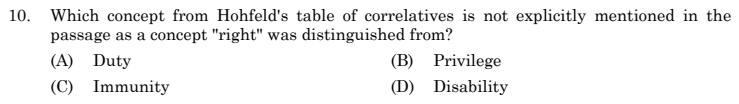
10. Which concept from Hohfeld's table of correlatives is not explicitly mentioned in the
passage as a concept "right" was distinguished from?
(A) Duty (B) Privilege
(C) Immunity (D) Disability
human_review_required
d3905f6d3c31af4cdf5d47d3e6380179c5fd2c8f55e489648d140783b06a0d3b:p0007:l0023:question
PDF page 7
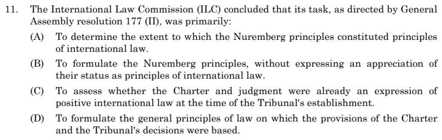
11. The International Law Commission (ILC) concluded that its task, as directed by General
Assembly resolution 177 (II), was primarily:
(A) To determine the extent to which the Nuremberg principles constituted principles
of international law.
(B) To formulate the Nuremberg principles, without expressing an appreciation of
their status as principles of international law.
(C) To assess whether the Charter and judgment were already an expression of
positive international law at the time of the Tribunal's establishment.
(D) To formulate the general principles of law on which the provisions of the Charter
and the Tribunal's decisions were based.
human_review_required
d3905f6d3c31af4cdf5d47d3e6380179c5fd2c8f55e489648d140783b06a0d3b:p0007:l0033:question
PDF page 7
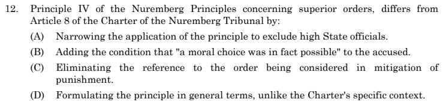
12. Principle IV of the Nuremberg Principles concerning superior orders, differs from
Article 8 of the Charter of the Nuremberg Tribunal by:
(A) Narrowing the application of the principle to exclude high State officials.
(B) Adding the condition that "a moral choice was in fact possible" to the accused.
(C) Eliminating the reference to the order being considered in mitigation of
punishment.
(D) Formulating the principle in general terms, unlike the Charter's specific context.
human_review_required
d3905f6d3c31af4cdf5d47d3e6380179c5fd2c8f55e489648d140783b06a0d3b:p0008:l0000:question
PDF page 8
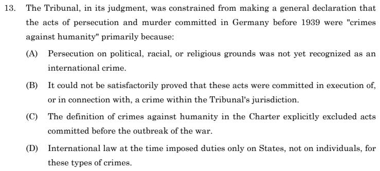
13. The Tribunal, in its judgment, was constrained from making a general declaration that
the acts of persecution and murder committed in Germany before 1939 were "crimes
against humanity" primarily because:
(A) Persecution on political, racial, or religious grounds was not yet recognized as an
international crime.
(B) It could not be satisfactorily proved that these acts were committed in execution of,
or in connection with, a crime within the Tribunal's jurisdiction.
(C) The definition of crimes against humanity in the Charter explicitly excluded acts
committed before the outbreak of the war.
(D) International law at the time imposed duties only on States, not on individuals, for
these types of crimes.
human_review_required
d3905f6d3c31af4cdf5d47d3e6380179c5fd2c8f55e489648d140783b06a0d3b:p0008:l0011:question
PDF page 8
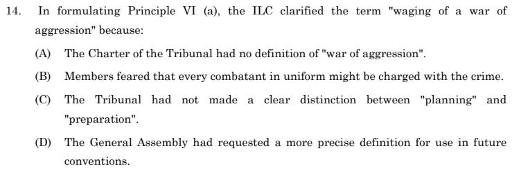
14. In formulating Principle VI (a), the ILC clarified the term "waging of a war of
aggression" because:
(A) The Charter of the Tribunal had no definition of "war of aggression".
(B) Members feared that every combatant in uniform might be charged with the crime.
(C) The Tribunal had not made a clear distinction between "planning" and
"preparation".
(D) The General Assembly had requested a more precise definition for use in future
conventions.
human_review_required
d3905f6d3c31af4cdf5d47d3e6380179c5fd2c8f55e489648d140783b06a0d3b:p0008:l0019:question
PDF page 8
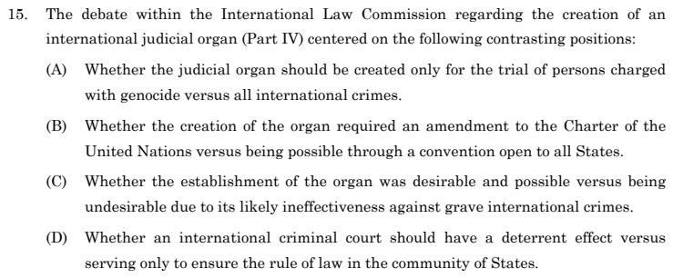
15. The debate within the International Law Commission regarding the creation of an
international judicial organ (Part IV) centered on the following contrasting positions:
(A) Whether the judicial organ should be created only for the trial of persons charged
with genocide versus all international crimes.
(B) Whether the creation of the organ required an amendment to the Charter of the
United Nations versus being possible through a convention open to all States.
(C) Whether the establishment of the organ was desirable and possible versus being
undesirable due to its likely ineffectiveness against grave international crimes.
(D) Whether an international criminal court should have a deterrent effect versus
serving only to ensure the rule of law in the community of States.
human_review_required
d3905f6d3c31af4cdf5d47d3e6380179c5fd2c8f55e489648d140783b06a0d3b:p0009:l0041:question
PDF page 9
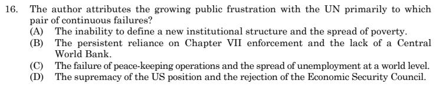
16. The author attributes the growing public frustration with the UN primarily to which
pair of continuous failures?
(A) The inability to define a new institutional structure and the spread of poverty.
(B) The persistent reliance on Chapter VII enforcement and the lack of a Central
World Bank.
(C) The failure of peace-keeping operations and the spread of unemployment at a world level.
(D) The supremacy of the US position and the rejection of the Economic Security Council.
human_review_required
d3905f6d3c31af4cdf5d47d3e6380179c5fd2c8f55e489648d140783b06a0d3b:p0010:l0000:question
PDF page 10
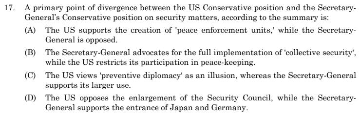
17. A primary point of divergence between the US Conservative position and the Secretary-
General’s Conservative position on security matters, according to the summary is:
(A) The US supports the creation of 'peace enforcement units,' while the Secretary-
General is opposed.
(B) The Secretary-General advocates for the full implementation of 'collective security',
while the US restricts its participation in peace-keeping.
(C) The US views 'preventive diplomacy' as an illusion, whereas the Secretary-General
supports its larger use.
(D) The US opposes the enlargement of the Security Council, while the Secretary-
General supports the entrance of Japan and Germany.
human_review_required
d3905f6d3c31af4cdf5d47d3e6380179c5fd2c8f55e489648d140783b06a0d3b:p0010:l0010:question
PDF page 10
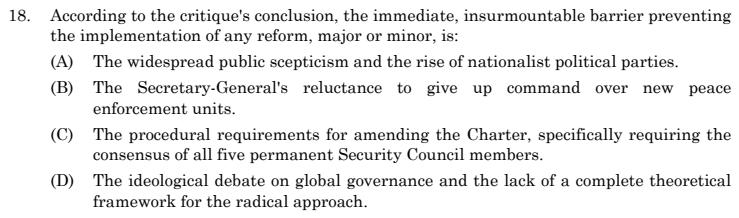
18. According to the critique's conclusion, the immediate, insurmountable barrier preventing
the implementation of any reform, major or minor, is:
(A) The widespread public scepticism and the rise of nationalist political parties.
(B) The Secretary-General's reluctance to give up command over new peace
enforcement units.
(C) The procedural requirements for amending the Charter, specifically requiring the
consensus of all five permanent Security Council members.
(D) The ideological debate on global governance and the lack of a complete theoretical
framework for the radical approach.
human_review_required
d3905f6d3c31af4cdf5d47d3e6380179c5fd2c8f55e489648d140783b06a0d3b:p0010:l0019:question
PDF page 10
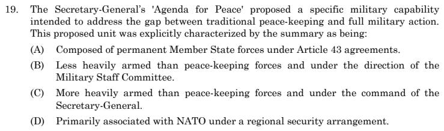
19. The Secretary-General’s 'Agenda for Peace' proposed a specific military capability
intended to address the gap between traditional peace-keeping and full military action.
This proposed unit was explicitly characterized by the summary as being:
(A) Composed of permanent Member State forces under Article 43 agreements.
(B) Less heavily armed than peace-keeping forces and under the direction of the
Military Staff Committee.
(C) More heavily armed than peace-keeping forces and under the command of the
Secretary-General.
(D) Primarily associated with NATO under a regional security arrangement.
human_review_required
d3905f6d3c31af4cdf5d47d3e6380179c5fd2c8f55e489648d140783b06a0d3b:p0010:l0028:question
PDF page 10
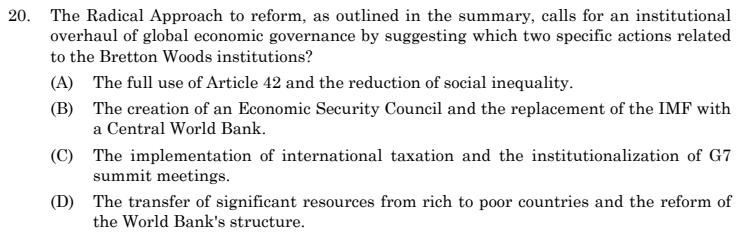
20. The Radical Approach to reform, as outlined in the summary, calls for an institutional
overhaul of global economic governance by suggesting which two specific actions related
to the Bretton Woods institutions?
(A) The full use of Article 42 and the reduction of social inequality.
(B) The creation of an Economic Security Council and the replacement of the IMF with
a Central World Bank.
(C) The implementation of international taxation and the institutionalization of G7
summit meetings.
(D) The transfer of significant resources from rich to poor countries and the reform of
the World Bank's structure.
human_review_required
d3905f6d3c31af4cdf5d47d3e6380179c5fd2c8f55e489648d140783b06a0d3b:p0011:l0030:question
PDF page 11
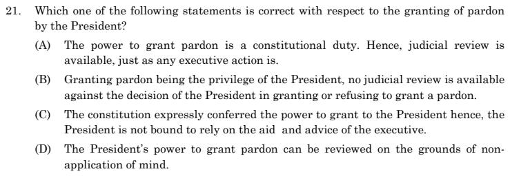
21. Which one of the following statements is correct with respect to the granting of pardon
by the President?
(A) The power to grant pardon is a constitutional duty. Hence, judicial review is
available, just as any executive action is.
(B) Granting pardon being the privilege of the President, no judicial review is available
against the decision of the President in granting or refusing to grant a pardon.
(C) The constitution expressly conferred the power to grant to the President hence, the
President is not bound to rely on the aid and advice of the executive.
(D) The President’s power to grant pardon can be reviewed on the grounds of non-
application of mind.
human_review_required
d3905f6d3c31af4cdf5d47d3e6380179c5fd2c8f55e489648d140783b06a0d3b:p0012:l0000:question
PDF page 12
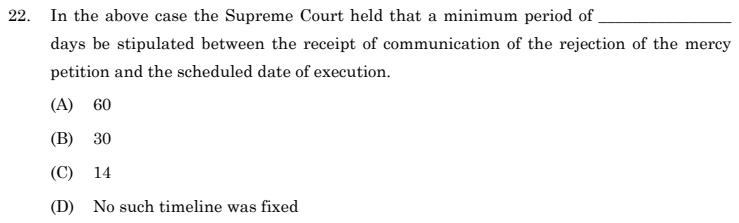
22. In the above case the Supreme Court held that a minimum period of ________________
days be stipulated between the receipt of communication of the rejection of the mercy
petition and the scheduled date of execution.
(A) 60
(B) 30
(C) 14
(D) No such timeline was fixed
human_review_required
d3905f6d3c31af4cdf5d47d3e6380179c5fd2c8f55e489648d140783b06a0d3b:p0012:l0007:question
PDF page 12
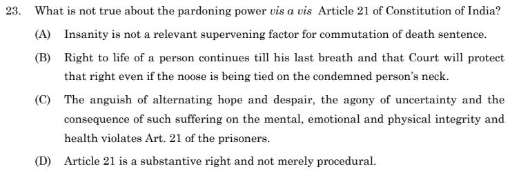
23. What is not true about the pardoning power vis a vis Article 21 of Constitution of India?
(A) Insanity is not a relevant supervening factor for commutation of death sentence.
(B) Right to life of a person continues till his last breath and that Court will protect
that right even if the noose is being tied on the condemned person’s neck.
(C) The anguish of alternating hope and despair, the agony of uncertainty and the
consequence of such suffering on the mental, emotional and physical integrity and
health violates Art. 21 of the prisoners.
(D) Article 21 is a substantive right and not merely procedural.
human_review_required
d3905f6d3c31af4cdf5d47d3e6380179c5fd2c8f55e489648d140783b06a0d3b:p0012:l0015:question
PDF page 12
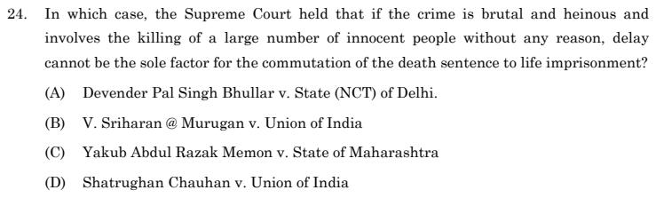
24. In which case, the Supreme Court held that if the crime is brutal and heinous and
involves the killing of a large number of innocent people without any reason, delay
cannot be the sole factor for the commutation of the death sentence to life imprisonment?
(A) Devender Pal Singh Bhullar v. State (NCT) of Delhi.
(B) V. Sriharan @ Murugan v. Union of India
(C) Yakub Abdul Razak Memon v. State of Maharashtra
(D) Shatrughan Chauhan v. Union of India
human_review_required
d3905f6d3c31af4cdf5d47d3e6380179c5fd2c8f55e489648d140783b06a0d3b:p0012:l0022:question
PDF page 12
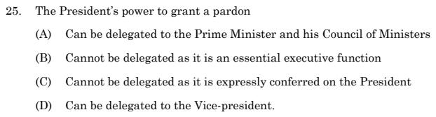
25. The President’s power to grant a pardon
(A) Can be delegated to the Prime Minister and his Council of Ministers
(B) Cannot be delegated as it is an essential executive function
(C) Cannot be delegated as it is expressly conferred on the President
(D) Can be delegated to the Vice-president.
human_review_required
d3905f6d3c31af4cdf5d47d3e6380179c5fd2c8f55e489648d140783b06a0d3b:p0013:l0023:question
PDF page 13
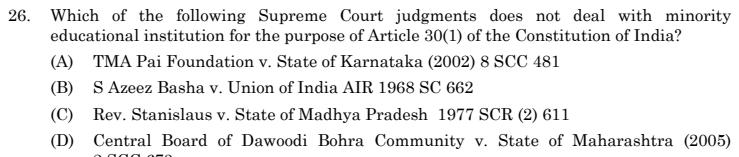
26. Which of the following Supreme Court judgments does not deal with minority
educational institution for the purpose of Article 30(1) of the Constitution of India?
(A) TMA Pai Foundation v. State of Karnataka (2002) 8 SCC 481
(B) S Azeez Basha v. Union of India AIR 1968 SC 662
(C) Rev. Stanislaus v. State of Madhya Pradesh 1977 SCR (2) 611
(D) Central Board of Dawoodi Bohra Community v. State of Maharashtra (2005)
human_review_required
d3905f6d3c31af4cdf5d47d3e6380179c5fd2c8f55e489648d140783b06a0d3b:p0014:l0000:question
PDF page 14
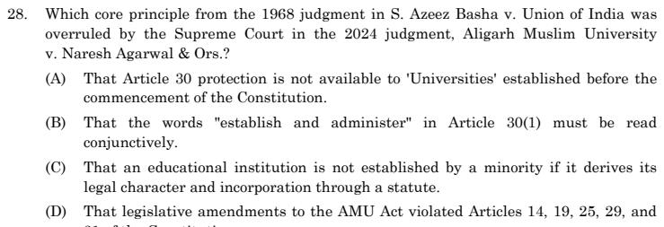
28. Which core principle from the 1968 judgment in S. Azeez Basha v. Union of India was
overruled by the Supreme Court in the 2024 judgment, Aligarh Muslim University
v. Naresh Agarwal & Ors.?
(A) That Article 30 protection is not available to 'Universities' established before the
commencement of the Constitution.
(B) That the words "establish and administer" in Article 30(1) must be read
conjunctively.
(C) That an educational institution is not established by a minority if it derives its
legal character and incorporation through a statute.
(D) That legislative amendments to the AMU Act violated Articles 14, 19, 25, 29, and
human_review_required, number_sequence_gap_or_reset
d3905f6d3c31af4cdf5d47d3e6380179c5fd2c8f55e489648d140783b06a0d3b:p0014:l0011:question
PDF page 14
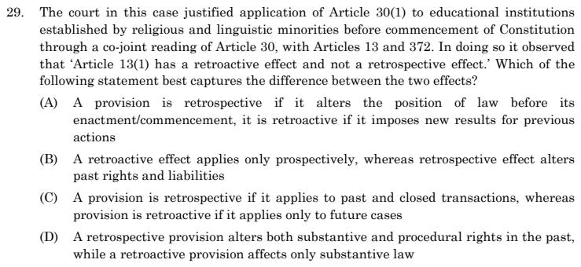
29. The court in this case justified application of Article 30(1) to educational institutions
established by religious and linguistic minorities before commencement of Constitution
through a co-joint reading of Article 30, with Articles 13 and 372. In doing so it observed
that ‘Article 13(1) has a retroactive effect and not a retrospective effect.’ Which of the
following statement best captures the difference between the two effects?
(A) A provision is retrospective if it alters the position of law before its
enactment/commencement, it is retroactive if it imposes new results for previous
actions
(B) A retroactive effect applies only prospectively, whereas retrospective effect alters
past rights and liabilities
(C) A provision is retrospective if it applies to past and closed transactions, whereas
provision is retroactive if it applies only to future cases
(D) A retrospective provision alters both substantive and procedural rights in the past,
while a retroactive provision affects only substantive law
human_review_required
d3905f6d3c31af4cdf5d47d3e6380179c5fd2c8f55e489648d140783b06a0d3b:p0015:l0021:question
PDF page 15
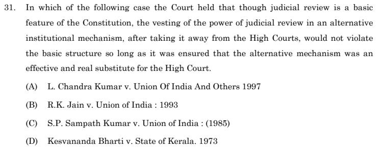
31. In which of the following case the Court held that though judicial review is a basic
feature of the Constitution, the vesting of the power of judicial review in an alternative
institutional mechanism, after taking it away from the High Courts, would not violate
the basic structure so long as it was ensured that the alternative mechanism was an
effective and real substitute for the High Court.
(A) L. Chandra Kumar v. Union Of India And Others 1997
(B) R.K. Jain v. Union of India : 1993
(C) S.P. Sampath Kumar v. Union of India : (1985)
(D) Kesvananda Bharti v. State of Kerala. 1973
human_review_required, number_sequence_gap_or_reset
d3905f6d3c31af4cdf5d47d3e6380179c5fd2c8f55e489648d140783b06a0d3b:p0016:l0000:question
PDF page 16
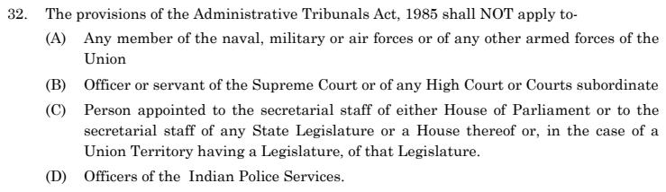
32. The provisions of the Administrative Tribunals Act, 1985 shall NOT apply to-
(A) Any member of the naval, military or air forces or of any other armed forces of the
Union
(B) Officer or servant of the Supreme Court or of any High Court or Courts subordinate
(C) Person appointed to the secretarial staff of either House of Parliament or to the
secretarial staff of any State Legislature or a House thereof or, in the case of a
Union Territory having a Legislature, of that Legislature.
(D) Officers of the Indian Police Services.
human_review_required